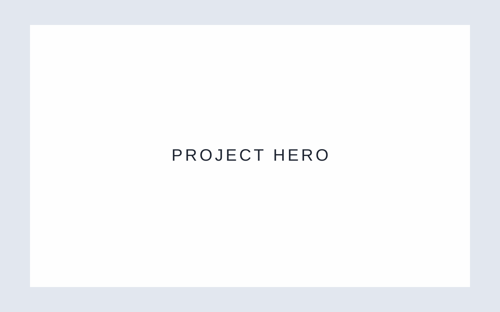
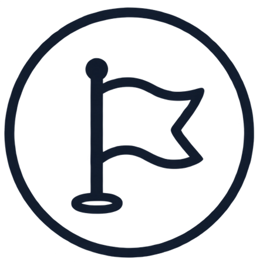
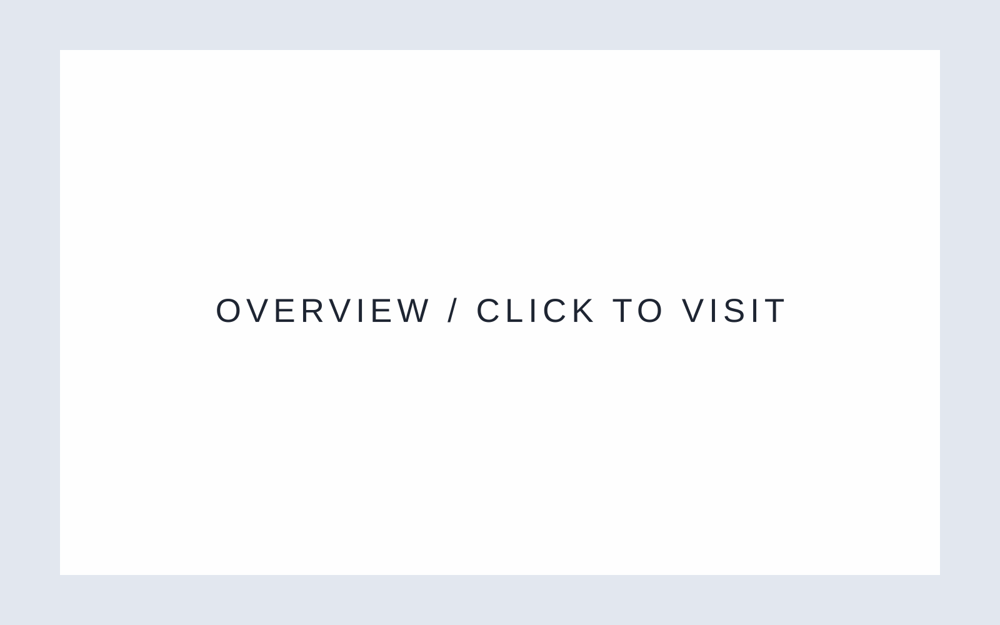
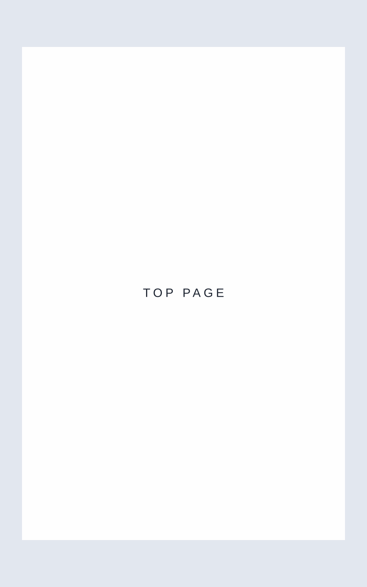
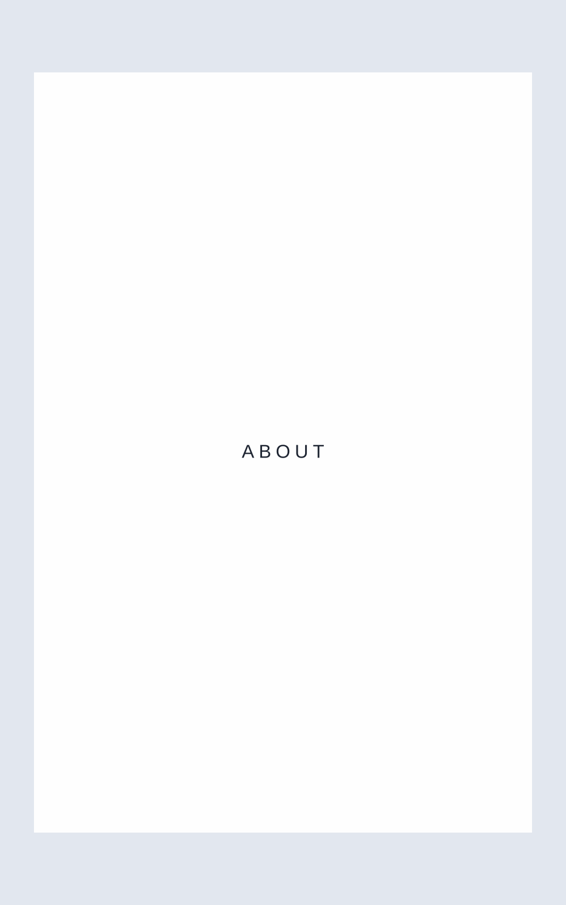
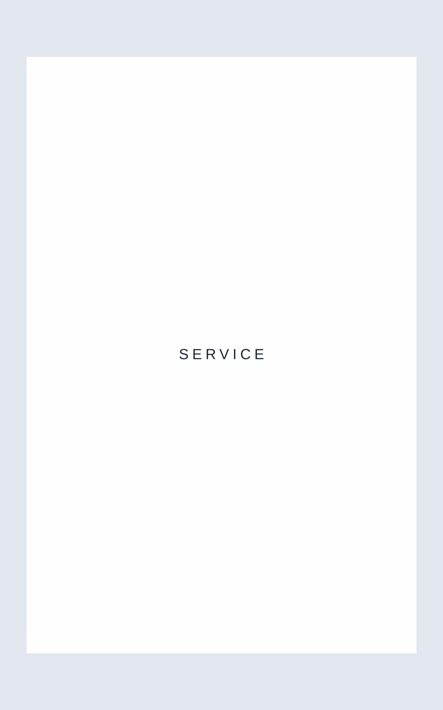

担当範囲
ワイヤーフレーム設計 / デザイン
外注様へコーディング指示
ライティング

ワイヤーフレーム設計 / デザイン
外注様へコーディング指示
ライティング

法人からの新規問い合わせ増加
採用情報の強化
約2.5ヶ月
Figma / Photoshop
HTML / CSS / JavaScript
既存サイトの情報整理を行い、事業内容・強み・実績をわかりやすく伝える構成へ再設計しました。ここには案件ごとの制作背景や課題、サイトで実現したことを記載します。

VIEW WEBSITE ↗「信頼感」「誠実さ」「地域とのつながり」をキーワードに、余白を活かしたシンプルなデザインで構成しています。案件ごとのデザイン意図に差し替えて使用してください。
COLOR
#1E2532#8B96A7#E2E7EF#FEFEFETYPOGRAPHY
AaNoto Sans JP
可読性の高い書体を採用。



ユーザーが求める情報へスムーズにアクセスできるよう、ナビゲーションや導線を整理しました。
写真や余白、配色を通して企業の信頼性と親しみやすさを伝えています。
問い合わせや採用など、サイトの目的につながる情報をわかりやすく設計しました。